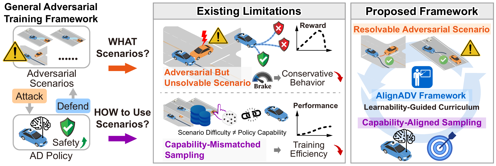
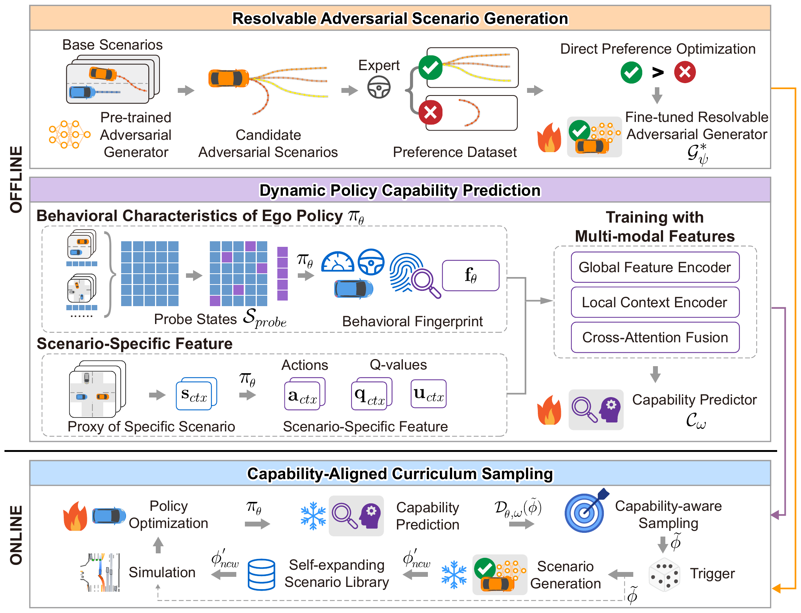

Abstract
Closed-loop adversarial training has emerged as a vital paradigm for enhancing the safety of autonomous driving policies by enabling them to learn from rare safety-critical scenarios. Standard training pipelines typically generate adversarial scenarios first, then sample them for policy optimization. However, most existing frameworks remain attack-oriented. Driven primarily by collision maximization, current generators often synthesize practically unsolvable extreme situations, thereby degrading the learning process. Furthermore, conventional heuristic and simplified sampling strategies ignore the continuously evolving capability of the driving policy, leading to sample inefficiency and delayed convergence. To overcome these limitations, we propose AlignADV, a learnability-guided closed-loop adversarial training framework designed to convert adversarial scenarios into resolvable and capability-aligned curricula. First, we reformulate adversarial scenario generation as a preference alignment problem and employ direct preference optimization to guide the generator toward critical yet resolvable scenarios. Second, we introduce the concept of behavioral fingerprint to extract the intrinsic characteristics of the evolving policy and construct a multi-modal capability prediction model that accurately evaluates policy performance without expensive simulations. By combining the resolvability-aligned scenario set with these capability predictions, we develop a dynamic curriculum sampling mechanism that prioritizes scenarios targeting the exact vulnerabilities of the current policy. Comprehensive experiments using the Waymo Open Motion Dataset demonstrate that AlignADV significantly improves both convergence efficiency and final performance, reducing training steps by up to 40.6% compared to baseline methods, while reducing collision rate and improving route completion rate in both normal and adversarial traffic conditions. These results highlight a shift from attack-oriented scenario generation to learnability-guided policy improvement, offering a principled direction for safer and more efficient autonomous driving training.
Problem Background
The efficacy of adversarial training depends on two key factors: what scenarios to generate and how to use these scenarios to maximize learning efficiency and policy performance.

Two bottlenecks in attack-oriented adversarial training
- Practically unsolvable adversarial scenarios. Collision-maximizing generators can synthesize extreme situations where no reasonable collision-avoidance response exists, which weakens learning feedback and may induce overly conservative behavior.
- Capability-mismatched scenario sampling. Heuristic or simplified sampling strategies ignore the continuously evolving capability of the driving policy, making sampled scenarios too easy for the current policy and reducing training efficiency.
Method Overview
The primary objective of AlignADV is to shift from the conventional unidirectional attack paradigm to learnability-guided curriculum loop. In this work, learnability serves as an operational principle that guides AlignADV to jointly pursue resolvability-aligned scenario generation and capability-aligned scenario sampling.

- Resolvable Adversarial Scenario Generation fine-tunes a pretrained adversarial generator with expert-evaluated preference pairs and Direct Preference Optimization, guiding generated scenarios toward critical yet resolvable interactions.
- Dynamic Policy Capability Prediction represents the evolving policy with behavioral fingerprints and predicts scenario-specific success probabilities before expensive simulation.
- Capability-Aligned Curriculum Sampling combines the resolvable scenario library with predicted policy capabilities to construct a dynamic curriculum distribution targeting the current policy's predicted vulnerabilities.
Results
Experiments are conducted in MetaDrive by reconstructing real-world traffic logs from the Waymo Open Motion Dataset. The evaluation verifies scenario solvability, behavioral fingerprints and capability prediction, and closed-loop adversarial training performance.
Scenario solvability
The fine-tuned generator sharply reduces unsolvable cases while preserving criticality and behavioral diversity.
| Model | Unsolvable Scenarios ↓ | Solvability Rate ↑ | Average TTC ↓ | APD ↑ | FPD ↑ | Variance ↑ |
|---|---|---|---|---|---|---|
| Pre-trained | 606 | 96.05% | 0.582 s | 2.771 m | 8.369 m | 2.696 |
| Fine-tuned | 20 | 99.87% | 0.577 s | 2.709 m | 8.284 m | 2.779 |
Behavioral fingerprints and capability prediction
Evolution of behavioral fingerprints form a continuous trajectory across rapid learning, exploration, and convergence, reflecting the evolving competence of the policy. The capability predictor further combines these fingerprints with local scenario context to estimate success probabilities before simulation, reaching 0.885 precision when identifying the top 10% most challenging cases.
Closed-loop adversarial training
Normal scenarios
| Method | Crash Rate ↓ | Route Comp. ↑ | Cost ↓ | Reward ↑ | Steps Saved ↑ |
|---|---|---|---|---|---|
| Replay | 18.65% ± 2.70% | 73.69% ± 1.99% | 0.482 ± 0.026 | 49.01 ± 1.99 | -- |
| Vanilla Adv | 15.95% ± 1.30% | 75.73% ± 1.53% | 0.461 ± 0.003 | 50.68 ± 1.84 | Baseline |
| Solvable Adv | 14.79% ± 2.57% | 77.84% ± 1.14% | 0.432 ± 0.021 | 53.43 ± 1.53 | 27.1% |
| Static | 14.70% ± 2.32% | 74.47% ± 2.44% | 0.468 ± 0.043 | 50.45 ± 2.73 | 7.7% |
| History | 14.85% ± 1.07% | 77.13% ± 0.69% | 0.434 ± 0.024 | 51.90 ± 1.07 | 3.9% |
| Ours | 11.80% ± 1.78% | 79.30% ± 1.54% | 0.404 ± 0.036 | 54.15 ± 1.36 | 40.6% |
Adversarial scenarios
| Method | Crash Rate ↓ | Route Comp. ↑ | Cost ↓ | Reward ↑ | Steps Saved ↑ |
|---|---|---|---|---|---|
| Replay | 40.31% ± 1.49% | 65.77% ± 1.05% | 0.653 ± 0.008 | 42.23 ± 1.30 | -- |
| Vanilla Adv | 35.77% ± 1.95% | 67.68% ± 2.39% | 0.634 ± 0.023 | 43.16 ± 1.96 | Baseline |
| Solvable Adv | 33.27% ± 1.34% | 70.10% ± 1.54% | 0.601 ± 0.017 | 45.39 ± 1.57 | 5.8% |
| Static | 35.50% ± 4.37% | 66.21% ± 3.69% | 0.639 ± 0.030 | 42.70 ± 2.58 | 0.0% |
| History | 34.97% ± 1.85% | 69.22% ± 1.31% | 0.609 ± 0.027 | 44.42 ± 1.30 | 17.4% |
| Ours | 31.37% ± 3.51% | 71.66% ± 1.93% | 0.588 ± 0.026 | 46.24 ± 1.91 | 30.9% |
BibTeX
@article{mei2026alignadv,
title={From Attacks to Curricula: Learnability-Guided Adversarial Training for Safe Autonomous Driving},
author={Mei, Yuewen and Nie, Tong and Sun, Jie and Shi, Haotian and Ma, Wei and Sun, Jian},
year={2026}
}